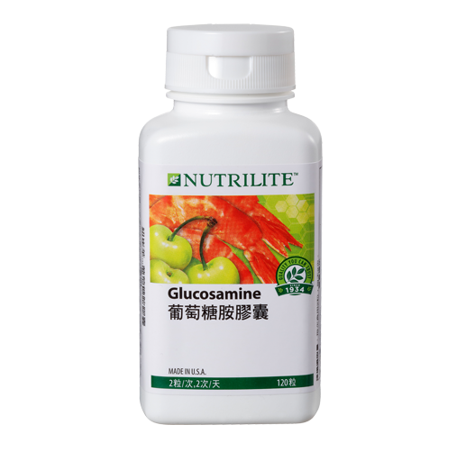

<div class="product_detail_content">
    <div class="picture">
        <div id="owl-demo" class="owl-carousel owl-theme">
            <div class="item"><span class="volume">120粒</span></div>
        </div>
    </div>
    <div class="infomation">
        <h3>葡萄糖胺膠囊<br><span class="small">高純度葡萄糖胺，恢復肢體好靈活</span></h3>
        <p>爬樓梯、路跑…發現肢體不像以往輕盈靈活，甚至感到卡卡？「葡萄糖胺膠囊」以尖端科技萃取天然葡萄糖胺菁華，結合珍貴的柑橘生物類黃酮及針葉櫻桃濃縮素，製成高含量葡萄糖胺膠囊，讓肢體隨心所欲的自由發揮！</p>
        <h4>產品特色</h4>
        <ul class="list_dot">
            <li>每4粒含1500毫克葡萄糖胺，補充身體營養素</li>
            <li>提供高純度、高穩定性、高含量的葡萄糖胺</li>
            <li>添加柑橘生物類黃酮及針葉櫻桃濃縮素</li>
            <li>每天4粒，讓肢體健康有活力</li>
            <li>補充天然植物營養，維持正常生理機能</li>
        </ul>
        <!-- <a class="download" href="pdf/products_glucosamine.pdf" target="_blank">營養成分PDF</a> -->
        <div class="btnWrap">
            <div class="showDetail">營養成分</div>
            <a class="download" href="pdf/products_glucosamine.pdf" target="_blank">下載PDF</a>
        </div>
        <div class="detailTable">
            <table class="tableizer-table">
                <thead>
                    <tr class="tableizer-firstrow">
                        <th>重要營養成分</th>
                        <th>4 粒含</th>
                    </tr>
                </thead>
                <tbody>
                    <tr>
                        <td>葡萄糖胺鹽酸鹽</td>
                        <td>1,500 毫克</td>
                    </tr>
                    <tr>
                        <td>柑橘生物類黃酮</td>
                        <td>35.2 毫克</td>
                    </tr>
                </tbody>
            </table>
        </div>
    </div>
</div>
